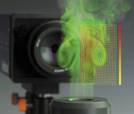
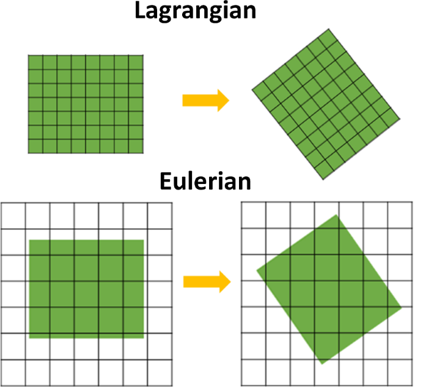
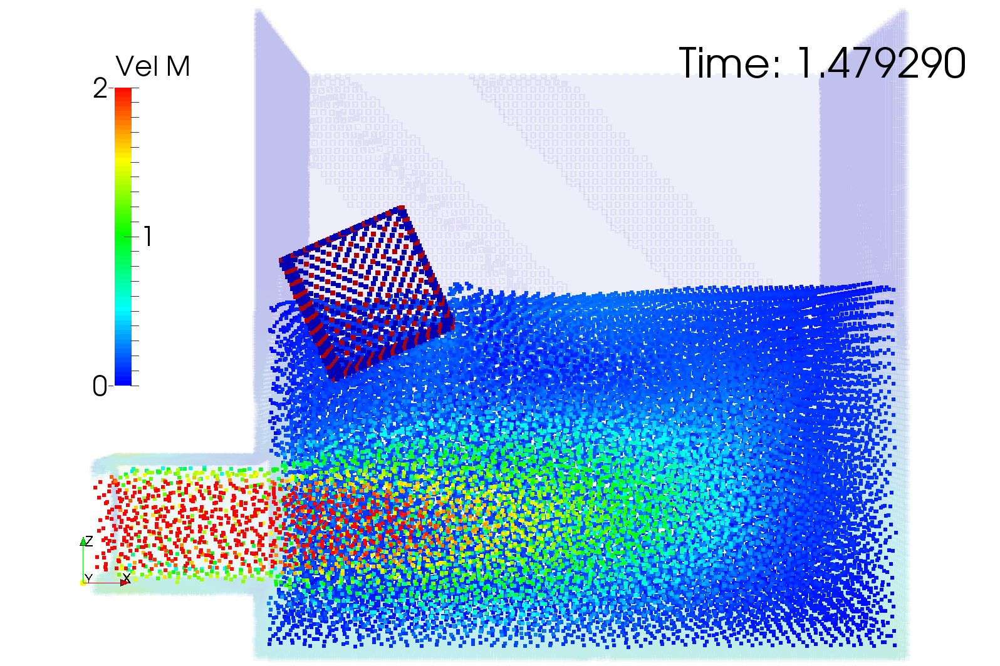
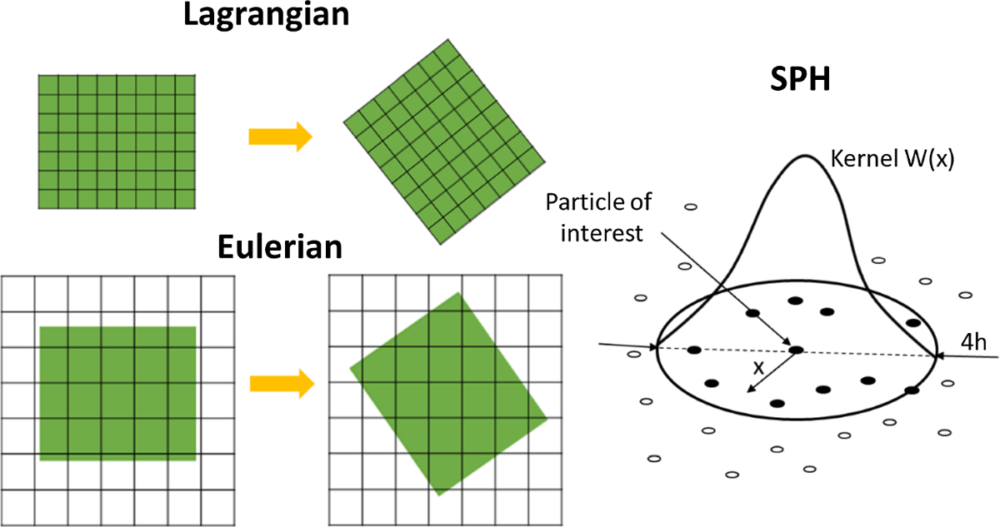
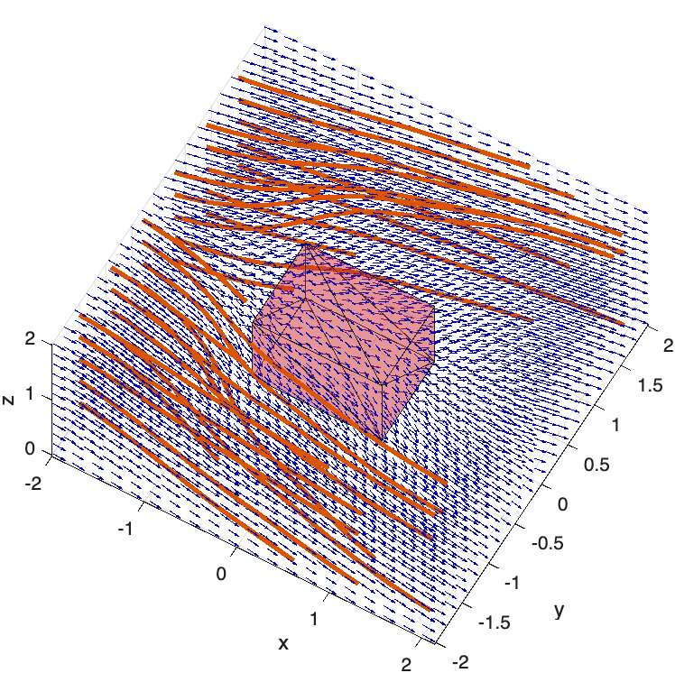
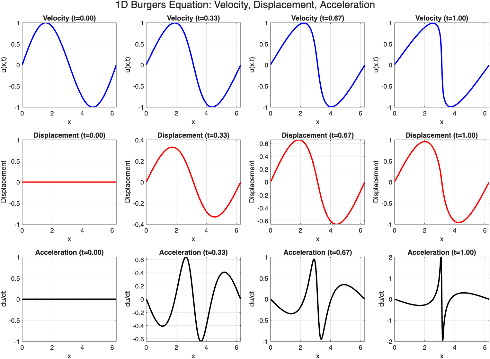

Fluid Mechanics Course
Lecture 2A · Fluid Kinematics

Francesco Ferri
AAU BUILD
Learning Objectives
- Interpret velocity as a field in space and time
- Distinguish Eulerian and Lagrangian descriptions
- Distinguish streamlines, pathlines, and streaklines
- Calculate local and convective acceleration
- Use one-dimensional continuity before Bernoulli
From Statics to Motion
In Lecture 1, a static fluid satisfied:
$$-\nabla p+\rho\mathbf{g}=0$$
For moving fluid particles, Newton's second law requires acceleration:
$$-\nabla p+\rho\mathbf{g}=\rho\mathbf{a}\quad\text{(inviscid model)}$$
Velocity as a Field
$$\mathbf{V}(x,y,z,t)=u\mathbf{i}+v\mathbf{j}+w\mathbf{k}$$
- Velocity: vector field
- Pressure and temperature: scalar fields
- Steady flow: field values at fixed positions do not change with time
Eulerian and Lagrangian Descriptions
Lagrangian
- Follow identified fluid particles
- Position \(\mathbf{x}=\mathbf{x}(\mathbf{X},t)\)
- Natural for particle tracking

Eulerian
- Observe fixed spatial locations
- Fields \(\phi(\mathbf{x},t)\)
- Natural for control volumes and CFD

System and Control Volume
System
A fixed identity of matter followed through time.
Control volume
A selected region through which matter may pass.

Flow Visualization
Streamline, Pathline, and Streakline
Streamline
Instantaneously tangent to \(\mathbf{V}\).
Pathline
Trajectory of one particle.
Streakline
Particles that previously passed through one fixed point.
Steady flow: streamlines, pathlines, and streaklines coincide.

Material Derivative and Acceleration
Material Derivative of a Field
Following a moving particle through an Eulerian field:
$$\frac{D\phi}{Dt}=\frac{\partial\phi}{\partial t}+\mathbf{V}\cdot\nabla\phi$$
- Local change: \(\partial\phi/\partial t\)
- Convective change: \(\mathbf{V}\cdot\nabla\phi\)
Acceleration Field
$$\mathbf{a}=\frac{D\mathbf{V}}{Dt}=\frac{\partial\mathbf{V}}{\partial t}+(\mathbf{V}\cdot\nabla)\mathbf{V}$$
Local acceleration
Velocity changes with time at a fixed point.
Convective acceleration
A particle enters regions with different velocity.

Worked Kinematics Example
For steady one-dimensional flow \(u=u(x)\):
$$a_x=u\frac{du}{dx}$$
If \(u=2x\) m/s with \(x\) in metres:
$$a_x=(2x)(2)=4x\ \mathrm{m/s^2}$$
At \(x=1\,\mathrm{m}\), \(a_x=4\,\mathrm{m/s^2}\).
One-Dimensional Continuity
Steady mass flow through a streamtube:
$$\dot m=\rho AV$$
For constant density:
$$A_1V_1=A_2V_2$$
Assumptions for the simplified relation: steady, one-dimensional port averages, constant density.
Lecture 2A Takeaways
- Eulerian fields describe what happens at fixed locations
- The material derivative gives the change experienced by a particle
- Steady flows can have convective acceleration
- Continuity links area and average velocity